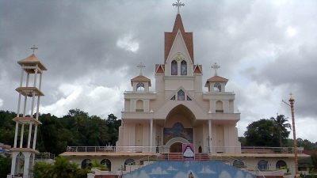
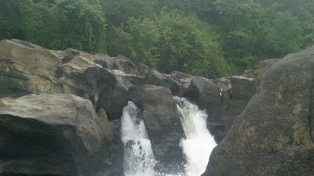
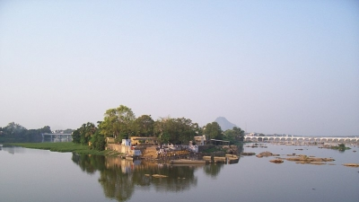

Tourism Hotspots Of Pathanamthitta
Manjinikkara Church
Manjinikkara Church is a pilgrim centre. It is built in Manjinikkara, about 4 km away from Pathanamthitta town. The Holy Patriarch of Anthiod, Mar Ignatius Elias III, visited India in 1931. When the famous Patriarch reached Manjinikkara, he was amazed by the beauty of the place and commented, “This place offers us much comfort; we desire to remain here permanently.”
Muloor Smarakam

Muloor Smarakam is dedicated to Muloor S. Padmanabha Panicker (1869-1931). He is a renowned poet and a social reformer of Kerala during the pre-independent era. The Muloor Smarakam, the memorial of Muloor S. Padmanabha Panicker is located at Elavumthitta, which is a tiny village situated at a distance of 12 km from the town of Pathanamthitta.
Perunthenaruvi Waterfall
Perunthenaruvi Waterfall is a picturesque waterfall that cascades in Perunthenaruvi. The place of this waterfall is 36 km away from the town of Pathanamthitta. This sparkling waterfall is on the banks of the Pamba river. The view of water gurgling down from a height of 100 ft to a rocky path and then flowing into a ravine is indeed breathtaking
Triveni Sangamam
Triveni Sangamam lies on the way to Sabrimala. The devotees on their way to the famous Ayappa Temple at Sabrimala halt here to take a dip in it for redemption. Hence, it can be termed as the main halting place while visiting Sabrimala. Triveni Sangamam means the meeting point of three rivers.